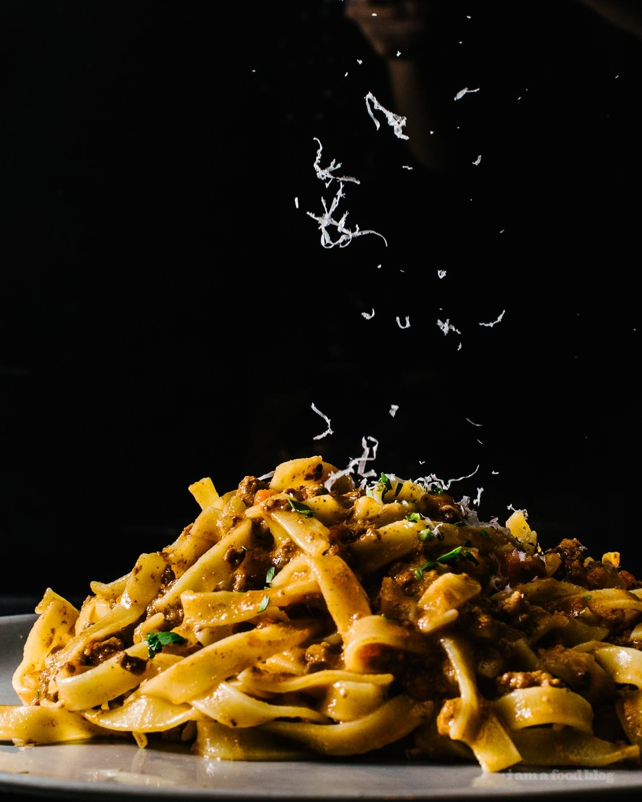

Bolognese Pasta Recipe

I’m a huge fan of bolognese sauce. So much so that Mike and I even went on a pilgrimage to Bologna. It was half in jest and half in complete and utter seriousness. I needed to taste bolognese sauce from Bologna. Somehow I got it in my head that it would be the ultimate bolognese. I was planning on stuffing my face, 6 times over, eating all of the sauce I could possibly handle. Alas, it wasn’t so, because, spoiler: it wasn’t everything I dreamed it would be.
Don’t get me wrong, it was good, but it was missing something. And to be honest, I think that little something was that I was expecting it to taste like American bolognese, the kind that my non-existent Italian nonna in Little Italy in NYC would make on Sundays. The kind that reminded me of family, all of us, spilling out of the kitchen, into the living room, and out on the stoop, holding of giant bowls of steaming pah-sta topped with Sunday gravy, held precariously in our laps, a snow shower of fluffy parmesan adding the final touch. In my dreams, the pot of sauce would be never ending and there would always be meatballs.
Sadly, I don’t actually have any actual memories of Sunday sauce because that never happened, but part of me is forever searching for those cozy pasta feels. There’s something primal in me that just loves a good bowl of noodles. I’m always on the lookout for bolognese sauce recipes. I mean, often times, I’ll just wing it – after all, all good sauces start with the same base ingredients: soffrito (the holy trinity of onions, carrots, and celery), meat, stock, and tomatoes. For fun, I’ll do different combinations of meat, or alter the amount of tomato, sometimes going for a rich almost tomato-less gravy, sometimes opting for a very tomato heavy, meat-light version.
All sauce is good sauce, especially when you’ve been smelling it bubble away all day, while visions of pasta twirl in your head. But while all sauce is good, there can only be one that is the best. Whenever something is labeled as “the best,” I take it with a big pinch of salt. The best is so subjective – even who you’re eating with can change the way you feel about what you’re eating. But, with that in mind, I set out to make the Kenji Lopez-Alt, of Serious Eats and The Food Lab fame, best slow-cooked bolognese.
Kenji has a few tricks up his sleeve: using powdered gelatin to give the sauce a luxurious texture, stirring in blended chicken livers for an underlying earthy meatiness, and oven slow roasting for rich brown flavors and tender meat. He also stirs in cream and parmesan for a fully emulsified sauce. But, my favorite part of his recipe, and by no means any secret to me, is finishing with a healthy amount of fish sauce, which ups the umami and ties everything nicely together.
This recipe makes a lot of sauce, but if you’re going to go for it, you’ve got to go all in! Invite a bunch of people over, or just plan on eating sauce for the next couple of days. You could even freeze it for those times when you just need a hit of bolognese. Whatever you do, set aside a day to make sauce. It could be this recipe, or your own, whichever it is, I just know it will warm your soul.
Next